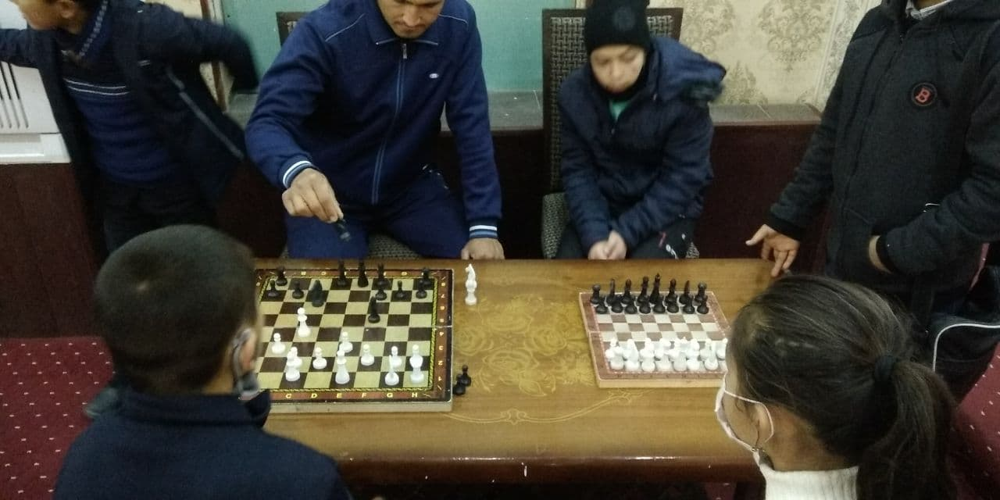
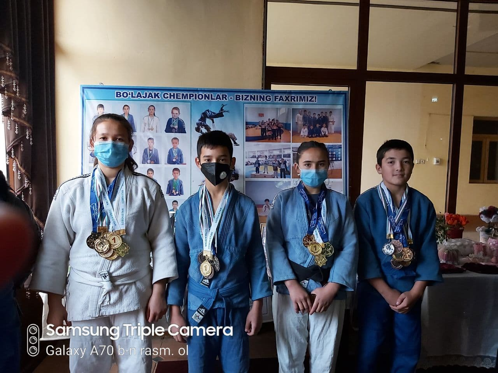
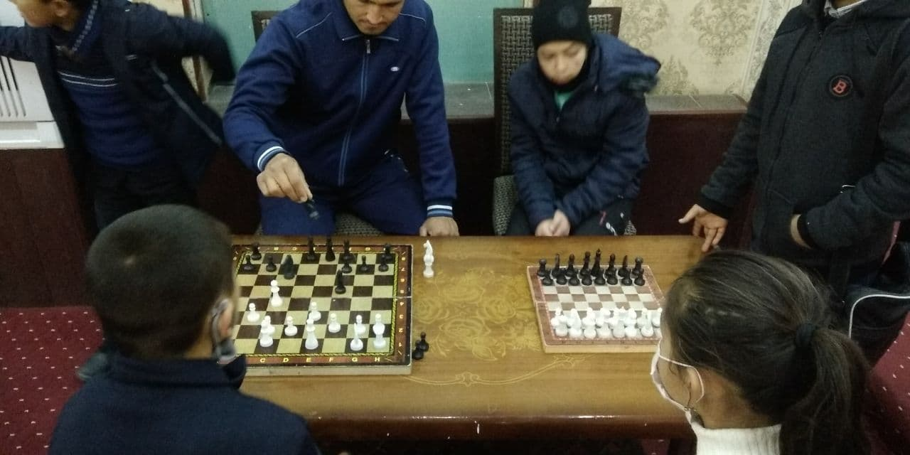
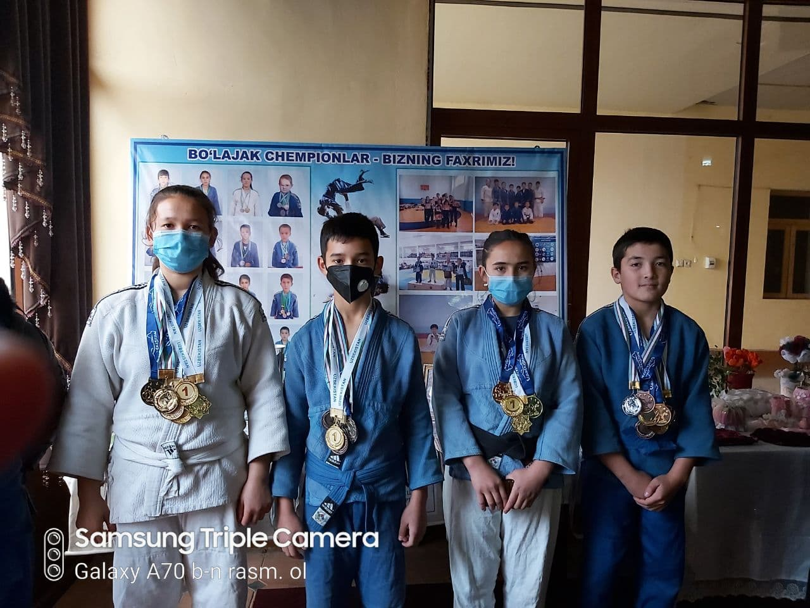
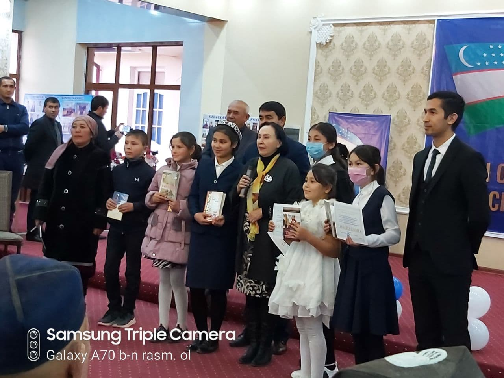
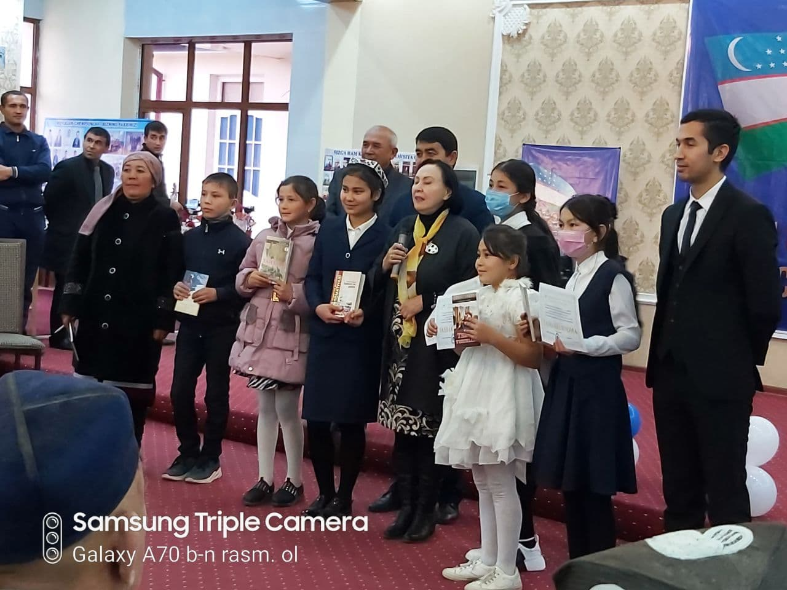
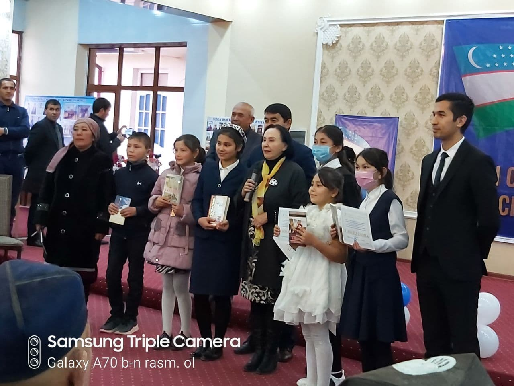
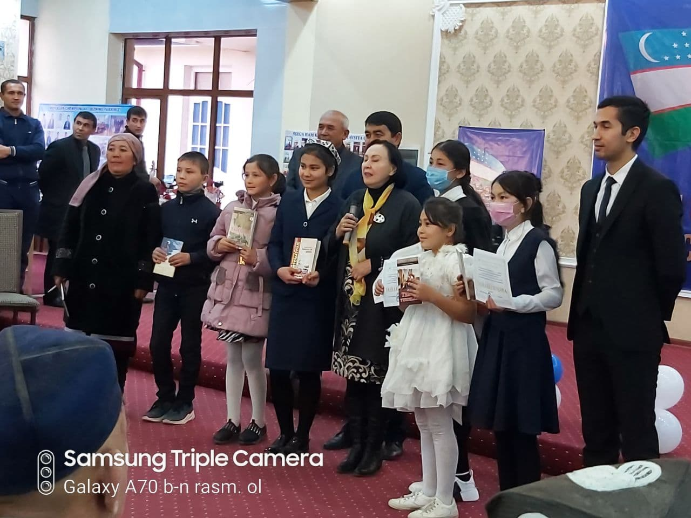
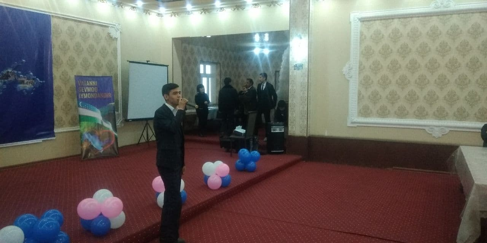
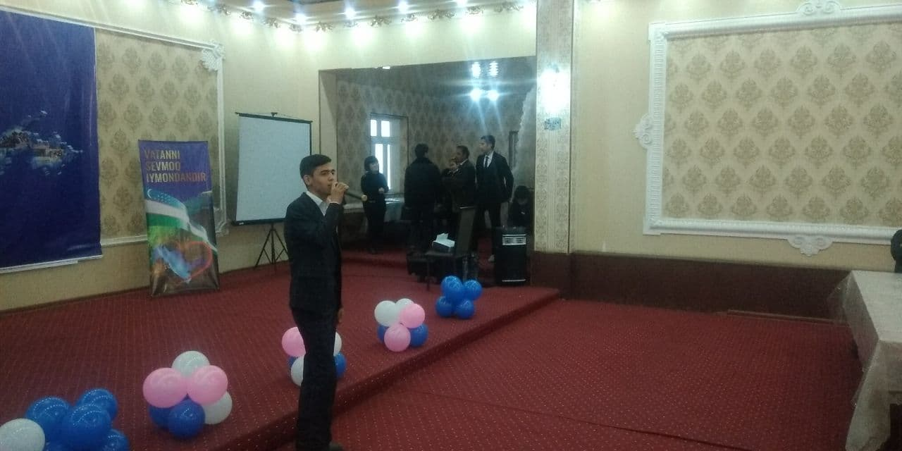

Ravot qishlog'i Jizzax viloyati tog'li hududida joylashgan bo'lib Sharof rashidov tumaniga qarashli."Ravot" so'zi "shahar tashqarisi" degan ma'noni anglatadi.Qishloqda 10dan ortiq mahalla va maktablar mavjud.
 



 



 
